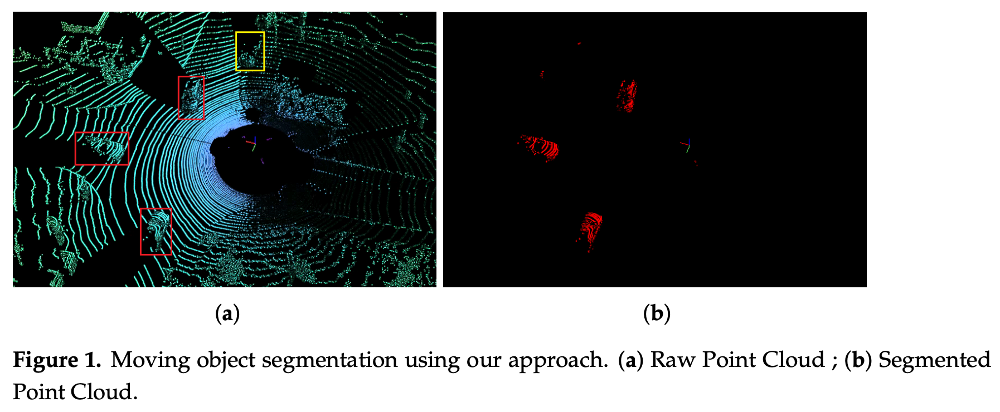
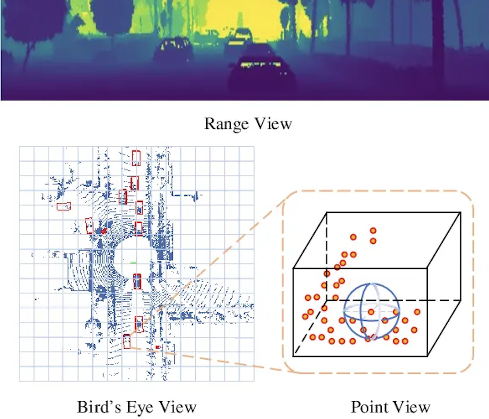

Link to research paper.
Context and adjacent research
As an abstract, autonomous driving should be able to recognize static and moving objects in the environment in order to avoid collisions and plan tasks (i.e. predicting the future state of the environment). To be able to perform real-time, they propose a lightweight MOS (Moving Object Segmentation) network structure based on LiDAR point-cloud sequence range images with only 2.3 M parameters, which was 66% less than the state-of-the-art network at that time.
RTX 3090 GPU Performances:
- 35.82ms processing time per frame
- IoU score of 51.3% on the SemanticKITTI dataset.
On a custom FPGA, they reach 32fps, highly exceeding the standard of 10 fps regarding LiDAR navigation algorithms for real-time.
Autonomous Vehicles can already perform point-cloud pre-processing and neural network segmentation. Therefore, only post-processing is left for the ECU (Electronic Control Unit). This is where their contribution shines:
- their implementation was one of the first end-to-end FPGA (ZCU104 MPSoC FPGA platform) implementations where a LiDAR is directly connected to the processing system (PS) side. After pre-processing, the point-cloud is stored in the DDR memory, which is accessible by the hardware accelerator on the programmable logic (PL) side
- they made the implementation “
hardware-friendly” by replacing deconvolution with bi-linear interpolation (look into it)

- Moving objects are represented by red masks.
- The yellow box is a parked car. So I assume yellow means stationary?
- Most of the existing architectures only predict semantic labels (vehicles, buildings, people), but cannot distinguish between moving and static objects as in this example.
Existing MOS networks really can be categorized into two groups:
- computer-vision-based. Here I remember a paper from TNO where they fed consecutive frames to a CNN to detect small moving objects. Maybe similar to that.
- LiDAR-sensor-based
However, it is the processing of LiDAR data that remains challenging due to the sparsity characteristic of point clouds.
One problem with all networks based on operating directly on the point cloud is the dramatic increase in processing power and memory requirements, causing the point cloud to become larger
LMNet utilizes the residual between the current frame and the previous frame as an additional input to the semantic segmentation network to achieve class-independent moving object segmentation. The same idea is adapted in RangeNet++ and SalsaNext for performance evaluation. In Efficient Spatial-Temporal Information Fusion for LiDAR-Based 3D Moving Object Segmentation, they utilize a dual-branch structure to fuse the spatio-temporal information of LiDAR scans to improve the performance of MOS.
Shifting towards attention-based architectures (check this info), EmPointMovSeg: Sparse Tensor Based Moving Object Segmentation in 3D LiDAR Point Clouds for Autonomous Driving Embedded System the autoregressive system identification (AR-SI) theory was used and it significantly improved the segmentation effect of the traditional encoder-decoder structure.
Why FPGAs? They provide high energy efficiency ratio and flexible reconfiguration. In Real-Time LiDAR Point Cloud Semantic Segmentation for Autonomous Driving, a LiDAR sensor is directly connected to FPGA through an Ethernet interface, realizing a deep learning platform of end-to-end 3D point cloud semantic segmentation based on FPGA, which can process point-cloud segmentation in real time.
Their proposed network
Spherical Projection of LiDAR Point Cloud
They were mainly inspired by LMNet. Therefore, the residual image is used as an additional input to the designed semantic segmentation network to achieve moving object segmentation.

Following this previous work, they use a 2D CNN to extract features from the range view of the LiDAR. Specifically, they project the 3D points of the lidar onto a sphere and then convert them to image coordinates with the following equations (is this the Ball query concept I covered in PointNet?):
- represents the range of each point as
- desired height and width
- is the sensor’s vertical FOV.
By extracting these features, they transform the problem from point-cloud moving segmentation to image moving segmentation. Here again, TNO did something interesting.
Residual Images
The residual image and range view based on LiDAR point cloud are used as the input of the segmentation network, and the temporal information in the residual image is used to distinguish the static object and the pixels on the moving object, so the actual moving object and the static object can be distinguished.